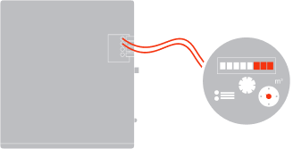

Горячая вода
Сейчас мы настроим счётчик горячей воды, для этого:
Откройте кран горячей воды пока устройство не перенесёт вас на следующую страницу
Сейчас мы настроим счётчик горячей воды, для этого:
Откройте кран горячей воды пока устройство не перенесёт вас на следующую страницу